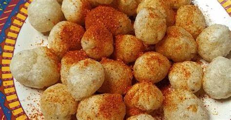

Cimol

Cimol is a traditional food from Bandung. It has chewy texture and delicious flavor.
If you want to make cimol, follow this recipe!
Ingredients :
- 250g tapioca flour
- 1 tsp salt
- 1/2 tsp ground pepper
- Chili powder
- 500g fried oil
- 250ml boiling water
- 1 clove of garlic puree
- 1 tbsp mushroom broth
How to make :
- Mix dry ingredients, tapioca flour, mushroom broth, salt, and pepper powder. Set aside.
- Boil the garlic until it boils.
- Pour the onion water little by little into the flour mixture. Mix well and knead until smooth.
- Round the dough, put it in cold oil and let it soak first.
- Cook cimol on medium heat.
- Serve with chili powder.